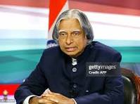

A . P . J Abdul Kalam
1931 - 2015
Missile man of India
Avul Pakir Jainulabdeen Abdul Kalam 15 October 1931 – 27 July 2015 was an Indian aerospace engineer and science administrator who served as president of India from 2002 to 2007. The Government of India honoured him with the Padma Bhushan in 1981 and the Padma Vibhushan in 1990.[2] In 1997, he was awarded India's highest civilian honour, the Bharat Ratna, for his contribution to the scientific research and modernisation of defence technology in India.[3] Born and raised in a Muslim family in Rameswaram, Tamil Nadu, Kalam studied physics and aerospace engineering. He spent the next four decades as a scientist and science administrator, mainly at the Defence Research and Development Organisation (DRDO) and Indian Space Research Organisation (ISRO) and was intimately involved in India's civilian space programme and military missile development efforts. He is popularly known as the "Missile Man of India" for his work on the development of ballistic missile and launch vehicle technology. He also played a pivotal organisational, technical, and political role in Pokhran-II nuclear tests in 1998, India's second such test after the first test in 1974. Kalam was elected as the president of India in 2002 with the support of both the ruling Bharatiya Janata Party and the then-opposition Indian National Congress. He was widely referred to as the "People's President". He engaged in teaching, writing and public service after his presidency. Kalam is known as Missile Man of India. While delivering a lecture at IIM Shillong, Kalam collapsed and died from an apparent cardiac arrest on 27 July 2015, aged 83. Thousands attended the funeral ceremony held in his hometown of Rameswaram, where he was buried with full state honours. A memorial was inaugurated near his home town in 2017.
Biographies
- Humble Roots: Born in 1931 in Rameswaram; sold newspapers as a boy to support his family.
- Aerospace Engineer: Studied aeronautical engineering at MIT Madras after graduating in physics.
- Space Pioneer: Led the project that launched India's first satellite launch vehicle (SLV-III) at ISRO.
- Missile Man: Developed India's core missile systems (Agni and Prithvi) and led the Pokhran-II nuclear tests.
- 11th President: Served as India's "People's President" from 2002 to 2007, deeply loved for his simplicity.
- National Honor: Awarded the Bharat Ratna in 1997, India's highest civilian award.
- Lasting Legacy: Passed away in 2015 while lecturing students; his birthday is celebrated as World Students' Day.